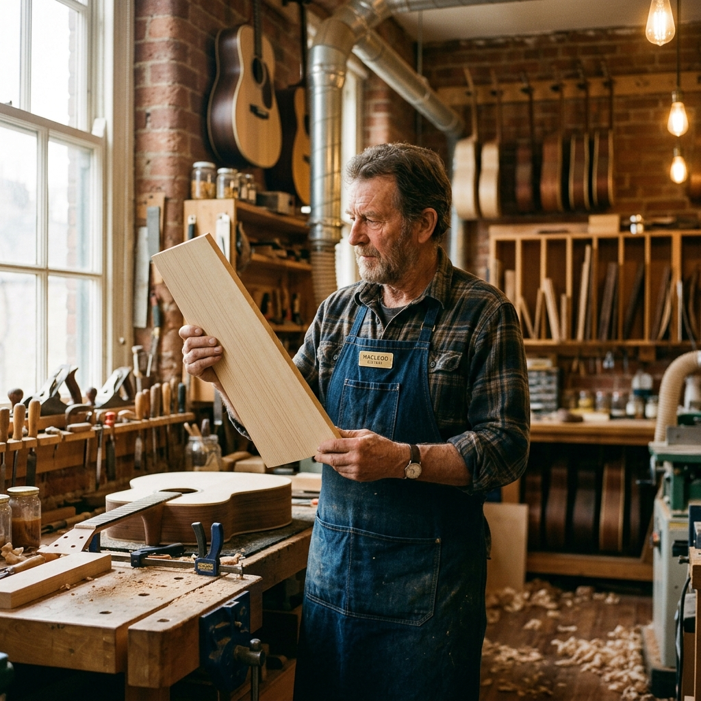

The FRET Story
Dedicated to the art of handcrafted string instruments.
From a Portland Garage Bench to World Concert Stages
The story of FRET began with a rebellion against the heavy finishes and automated shortcuts of mass production—rediscovering the soulful, unhindered resonance of pre-war acoustic lutherie.


Four Decades of Uncompromising Evolution
Arthur Pendelton opens the first one-room shop in Portland, focusing on pre-war acoustic restoration and developing our proprietary hand-tap voicing methods.
Complete transition to traditional hot protein hide glue and hand-graduated Adirondack tops, earning international acclaim from the Guild of American Luthiers.
Master artisan Elena Rostova joins FRET to launch our electric division, pioneering hand-scatter-wound pickups and chambered resonant bodies with thin nitro finishes.
Over 1,250 handcrafted instruments in the hands of touring artists, composers, and collectors across 42 nations—each backed by an archival lifetime warranty.
Our Mission & Vision
Every shaving planed, glue seam joined, and string tuned in our workshop is governed by two timeless North Stars: an unwavering acoustic mission and an enduring generational vision.
Acoustic Honesty
Every tone originates from authentic, aged tonewood resonance—never altered by artificial coatings.
Patient Discipline
We honor natural drying cycles: 15-year air-seasoned timbers and weeks of meticulous hand-lacquering.
Ergonomic Harmony
Hand-sculpted neck profiles rolled and micro-buffed to eliminate hand fatigue across multi-hour performances.
Artisan Partnership
Direct collaborative relationships between player and luthier from raw timber selection to the first chord.
Why Choose FRET
In an era dominated by assembly lines and commercial factory branding, discover the six pillars of master craft that make our workshop the choice of discerning musicians worldwide.
10–25 Yr Vault-Aged Tonewoods
We never use force-dried or kiln-baked lumber. All soundboards, backs, and sides are naturally seasoned in our climate vault for up to a quarter century, ensuring maximum cellular stability, pitch holding, and warm acoustic maturity from the first strum.
Appalachian Spruce · Brazilian Rosewood · Flamed Maple100% Hand-Voiced Soundboards
Factory guitars stamp uniform brace shapes. Arthur individually tap-tunes and scallops each brace with micro-planes by ear, adjusting for the specific density and flex of each top billet to achieve harmonic overtone bloom and dynamic responsiveness.
Voiced by Ear · Scalloped Pre-War BracingHot Hide Glue & 4-Micron Nitro
We join sound-critical components with organic hot hide glue that cures crystalline hard, transferring vibration with zero acoustic damping. Finished in ultra-thin nitrocellulose lacquer that lets tonewood breathe and age into a rich patina.
Crystalline Resonance · Fully ReversibleBespoke Ergonomic Hand-Carves
Every neck profile is carved by hand to match your specific grip geometry, thumb position, and hand span. Jescar nickel or stainless frets are individually crowned and mirror-polished with rolled fingerboard edges for fatigue-free performance.
Tailored Neck Carve · Rolled Fret EdgesDirect Master Builder Collaboration
You collaborate directly with Arthur, Elena, or James—never sales middlemen. Throughout the creation of your instrument, you receive dedicated photo and video journal entries detailing timber selection, brace shaping, and final bench setups.
1-on-1 Consultations · Personal Build JournalArchival Passport & Lifetime Care
Every FRET instrument arrives with a hand-bound leather build passport detailing timber harvest provenance, blueprint specs, and tap frequencies. Backed by our unconditional lifetime bench warranty with free seasonal adjustments and setups.
Archival Provenance · Lifetime Bench SupportMasters of the Bench
Arthur Pendelton
Founder & Master LuthierWith over 40 years at the bench, Arthur oversees all custom commissions and final voicings of the acoustic line.
Elena Rostova
Head of Electric DivisionElena brings precision engineering and a deep understanding of vintage pickup winding to our solidbody and archtop models.
James Chen
Head of RestorationA specialist in structural repair, James is entrusted with resurrecting vintage instruments sent to us from around the world.
"An instrument is not merely an object of wood and wire. It is an amplifier of the human spirit. We build the tool; you create the magic."